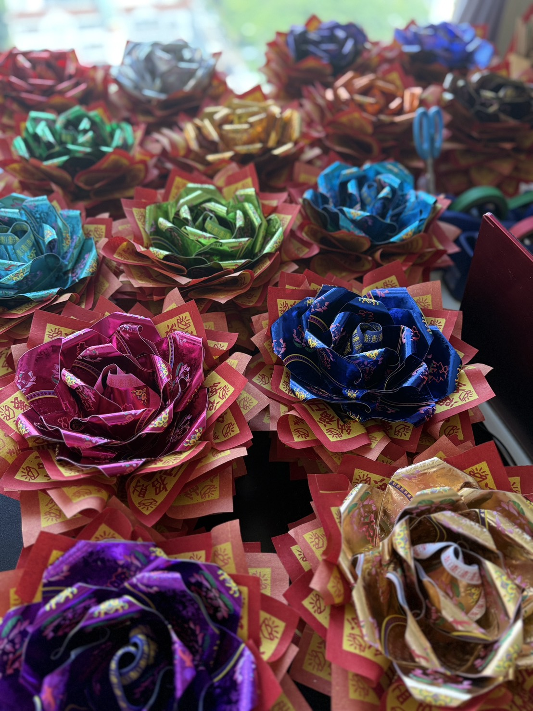

Taichung Paper Art Class
台中紙藝課程
金紙手作教學
昌久貹金紙藝品文創在台中定期開設紙藝手作課程，從材料認識、紙藝結構到作品完成，帶新手一步一步做出具有祝福感與儀式感的金紙作品。
主要課程包含福願花束手作班、好神花紙藝課與永思花紙藝課，適合想學習金紙文創、祭祀紙藝、神明花束與追思花禮的學員。
查看課程資訊 LINE 洽詢
新手可學
課程會從基礎工具、材料特性與手作步驟開始，不需要紙藝經驗也能跟上。老師會依作品難度安排節奏，讓學員能完成可帶回的成品。
完整學習路徑
從入門手作、福願花束、好神花與永思花課程，到JYCP國際認證培訓，協助學員逐步累積技法、作品理解與教學能力。
課後不放生
昌久貹重視課後陪伴，學員可延伸練習、調整作品細節，也能依能力發展接單、教學、品牌經營與作品販售方向。
Contact
台中紙藝課程洽詢
想了解近期台中課程梯次、福願花束手作班、好神花紙藝課、永思花紙藝課或JYCP國際認證培訓，都可以透過 LINE 與昌久貹聯繫。
回課程專區 加入 LINE 詢問